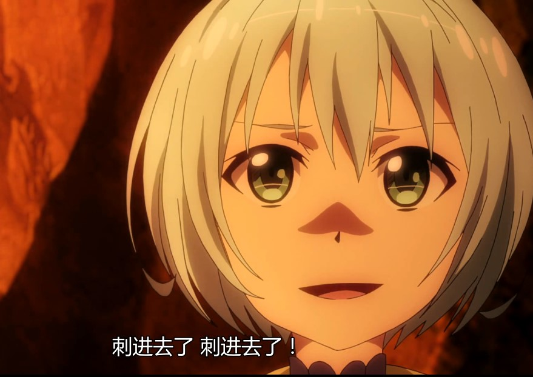

第五百二十一章 人类的赞歌
通往炎龙巢穴的洞穴内部有着幻想般的广阔空间。
从火山里流出的熔岩在冷却之后就会凝固起来，然后还会有新的熔岩流出来，然后再凝固，如此不断重复，累积起来的积层构造就像是长长的阶梯一样。
它们连接在一起，感觉就像神殿的入口一样。墙壁也不是坚硬的一整块，简直就像是宽大的帘子一样。就算是有谁想把这里当成是神殿进行修葺也不会被人质疑的。
回廊、高台、甚至连像是祭坛的结构也有，这是决不能小看自然鬼斧神工的力量，如果把哪位宗教人士带到这里，说不定他会决定在此处建立一座教会。
作为唯一的正规军人，也是这次炎龙见面会活动的发起人，备受信赖的伊丹本来应该拿着手电走在最前面的，不过因为背着杜嘉的关系，多少影响了他的行动力，所以黑精灵的打杂献殷勤的在拿着火把在前面带路。
除了厌恶地底的萝莉，本次郊游的所有人都进入了这个通往炎龙巢穴的洞穴，其实月姬并不想让这些黑精灵的新兵蛋子进来的，不过有一大堆伊丹带来的行李需要人搬，所以……
黑便当，运送中。
不作死是不会死的，月姬保证。
由火把和手电照明产生的阴影，以及在封闭空间内发出的独特的音响效果的相互衬托下，酝酿出一种神秘的气息。
“伊丹阁下，就在这前面！”
洞穴的前面有了亮光，逐渐变得狭小的通道突然又豁然开朗，
放下杜嘉和行李，伊丹只拿一把步枪战战兢兢地往前走，上边通过火山口可以看到星光闪耀的天空，显眼的光亮是月光从火山口照射进来造成的。
“这里就是炎龙的巢穴啊……”
与小心翼翼的伊丹不一样，月姬倒是大大方方的走出洞穴观察着炎龙居住的巨大巢穴。
这里是巨大的火山口岩壁上的一个平台，火山口的面积和一座棒球场差不多，而平台应该与两座篮球场大小相当，这里没什么刺鼻异味，虽然和人类的卫生观念不一样，但是大部分动物都是不会在自己的巢穴里排泄的，当然，这大概也和这个巢穴是露天通风有关系吧。
“喂，再怎么说，也要小心点啊！”
伊丹稍微提高声音警告道，同时眼睛在四处观察着。
“放心，炎龙不在了，所以不用那么小心翼翼的。”月姬摆了摆手，虽然因为身体逐渐恢复，对大餐，月姬的感官已经不如原来那么敏感了，但是多多少少还是能感觉到一些特别的气息的。
炎龙的气息不在！
“月，你在干什么？”蕾莱注意到月姬蹲在地上不知道做些什么，于是开口问道。
“观察这个！”月姬从地上捡起一块碎片对着蕾莱示意了一下。
“这个……”蕾莱接了过来皱着眉观察着。
“蛋壳！”月姬为还在判断的蕾莱解答道，“大概是炎龙幼崽的蛋壳吧。”
“喂喂喂，别这样啊，我可不想遇到炎龙海啊”一边的伊丹听到月姬和蕾莱的交谈百感交集的说道。
“新，新生龙的威胁没有炎龙那么严重吧。”虽然有绿衣人保底，但是到底是新兵蛋子，黑精灵听说炎龙可能不只有一头时候稍微有些紧张起来了。
“古代龙新生龙=高龄的亚龙飞龙。”蕾莱根据看过的古书里记载的内容回答道。
“我东西忘记带了，我要先回去了！”伊丹一本正经的说道，而伊丹的话则让一众黑精灵露出了惊容。
“真的？”月姬挑了挑眉，这是很明智的选择，不过……
“虽然想这样，不过……”伊丹叹了口气，看了眼被他安置在洞穴出口的杜嘉，“就这样回去，杜嘉的病……”
大概没救了吧。
月姬耸了耸肩，心病难医，之前面对炎龙已经让杜嘉精神病加重了，这次如果无功而返，杜嘉说不定会彻底疯癫。
“所以，赶快把你们要布置的东西都布置起来！”月姬拍了拍手催促道，“炎龙现在虽然不在，但是，谁也不知道它会什么时候回来。”
“对对！开始干活吧！”伊丹点了点头，他让蕾莱照看下杜嘉，然后拿出背包指导着其他黑精灵如何使用和布置他带来的特别黏土。
“巴恩，芬，诺科，在巢穴正中央挖个洞！”
“是！”
“其他人拿着这个……”
“嘿！这东西里掺进了毒药，既不要吃也不要舔！”
月姬眼尖的注意到一个黑精灵要把黏土塞到嘴里厉声呵斥道，记得是叫科姆来着，真是的，好歹也是白来岁的人了，什么都往嘴里塞，真奇怪他是怎么活到现在的。
“你还有你跟我过来！其他人继续帮伊丹布置陷阱！”月姬随手指了两个黑精灵说道。
“公主，你这是要干什么？”伊丹疑惑的抬头问道。
“总觉得见死不救不太好，所以，感谢我吧，只要你们之后听我的指挥，我保证你们活着回去！”月姬瞥了眼伊丹回答道，然后也不在意伊丹一副你逗我玩的表情，随手抽起地上插着的单手剑。
炎龙的巢穴有很多附魔了的武器，也就是所谓的魔法武器，单手剑、双手剑、弯刀、巨斧……
显然，这些都是曾经向炎龙发起挑战的人留下的东西，虽然就月姬的眼界看，都不是什么上的了台面的东西，但是，对于这个世界的魔法水平而言，大概是相当值钱的东西吧。
不过，这些玩意真的能破炎龙的防吗？
月姬深表怀疑，在学院的时候，她就听说过一个笑话——
在很久以前，原世界还没有没落的时候，在欧罗巴大陆，有个叫做海德拉的强大魔兽，它每百年就会出来肆虐一次，无数的英雄为了人类的未来、或者说未来扬名立万踏上了讨伐海德拉的旅途，但最后……他们都没有回来，侥幸回来的人诉说着那场史诗般的战斗，海德拉在那之后没有再出现，人们歌颂并传唱属于人类的赞歌……
似乎是个很具有史诗感的故事，但是，知情人士透露，史诗般的战斗根本不存在，肆虐什么的大概也不是那么回事。
海德拉大部分时候都是在睡觉，除了去海里捕食，几乎都不出去，最初的时候人类根本就不知道它的存在，只不过后来有人挖坑挖到了海德拉的洞穴，然后被海德拉的体型吓到了，之后就显而易见的，那个人告诉了当时的国王这件事，然后国王叫来了一大帮人讨伐海德拉。
然后开始战斗了吗？
很遗憾，没有，武器都砍断了都没有打穿海德拉的鳞片，甚至连叫醒海德拉的能力都没有，海德拉偶尔翻了个身，倒霉些的人被压死了，而更倒霉的人，则是因为矿洞被堵塞，出不去，活活的被饿死。
所谓的肆虐，大概是因为海德拉翻个身会造成局部小范围地震吧，不是什么很大的震级，但是没办法，人类怕啊。
窝囊的死了第一批，事情并没有完，传说已经传开了，地震的起因是海德拉的肆虐，虽然是人类瞎猜的，却是事实，海德拉的存在以及海德拉巢穴里的宝石吸引了无数追逐财富与名声的人，就算原本的矿洞被掩埋了，人类也能很快的挖出新的矿洞。
海德拉醒来的时候，大概对身边多出来一堆骨头架子一脸懵逼吧。
海德拉根本就没有真的动手过，死于矿难的人远比被海德拉压死的人多，当然，矿难的起因正是海德拉翻身。
虽然也有海德拉醒着的时候人类闯进来过，但是对于塞牙缝都不够的肉沫，海德拉根本不感兴趣，去海里随随便便就能填饱肚子，何必袭击人类。
其实人类当时如果能无视海德拉的话，矿里的宝石可以随意拿的，因为那不是龙，对亮晶晶的东西没什么兴趣，但是……恐惧让人难以做出正确的判断，
海德拉的消失也并非是因为被谁讨伐了，仅仅是因为当时自然环境的变化，欧罗巴已经不适合它那种巨型生物居住了，所以迁徙到了其他更适合生存的世界去了。
人类在海德拉的记忆里，大概也没留下什么印象吧。
眼前这个巢穴发生的事情，和月姬听说故事何其相似，只不过，人类虽然还是那样的人类，炎龙却远不如海德拉那样强大，可就算如此，也够了。
以亚神萝莉的武器和力量都不能破开炎龙的鳞片，就靠拿着这些垃圾的人类的力量又能干什么？
附了魔的武器不表示砍东西就真的像砍瓜切菜一样容易，防御魔法武器也并不一定要有什么出色的魔抗，生命活着的本身就具有一定的力场在，因为生命力场的存在，只要够硬，就已经足够防御低端的魔法效果了。
……
【最近很怠惰，嗯，海德拉的故事，有眼熟的感觉吗？】
【炎龙的鳞片真的很硬，蕾莱破炎龙的防御，是靠役使的魔法剑的速度，而不是剑上有什么锐利+1之类的魔法在，当然剑尖的形状也是一个要素了。这大概是天下武功无坚不摧唯快不破吧。萝莉砍炎龙一斧子竟然没有吧炎龙脑子破开，看来斧子除了硬和重，并不怎么锋利】
【第三季开始了，我该让谁去UW呢？优纪怎么样？驾驭白龙不被公理教会约束的自由骑士优纪】
【大魔法·主角切换术，滑稽……比起优纪，真要切换，已经没有实体的蓝子或许更加合适，我说了，间谍有哦，悠娜在主角手里，重村教授就受主角控制，送蓝子进去，很简单。】